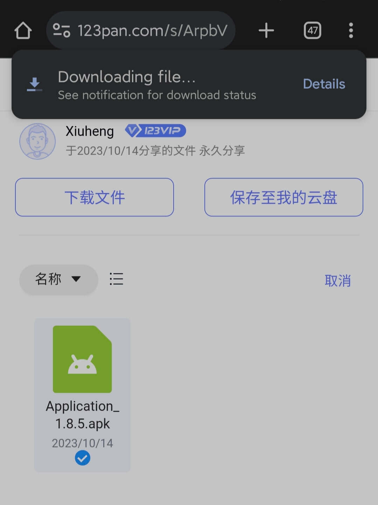
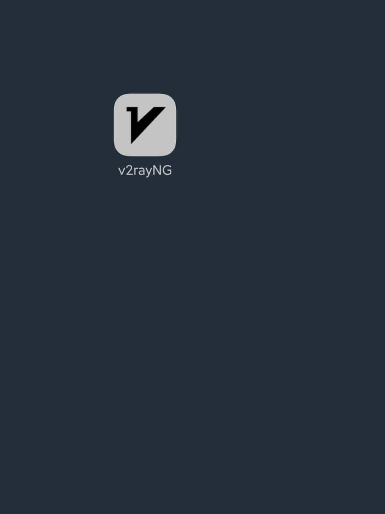
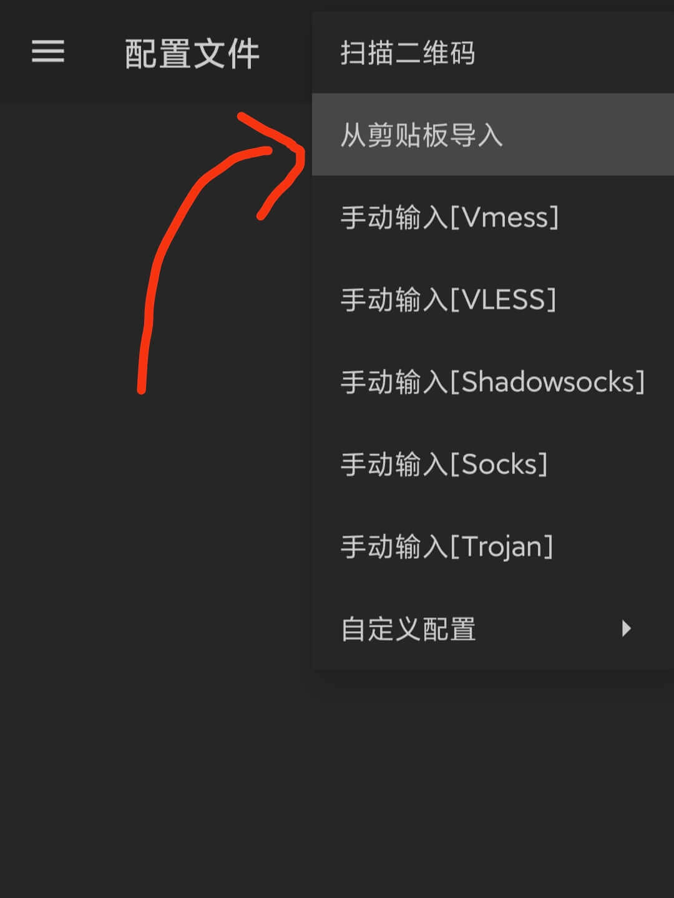
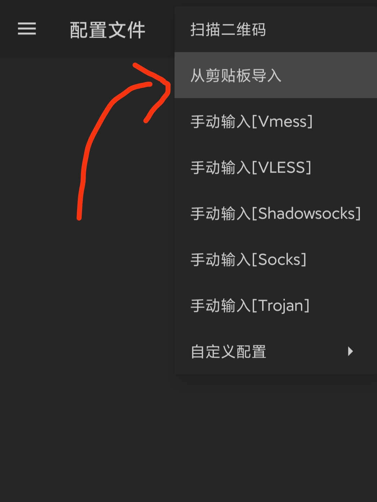
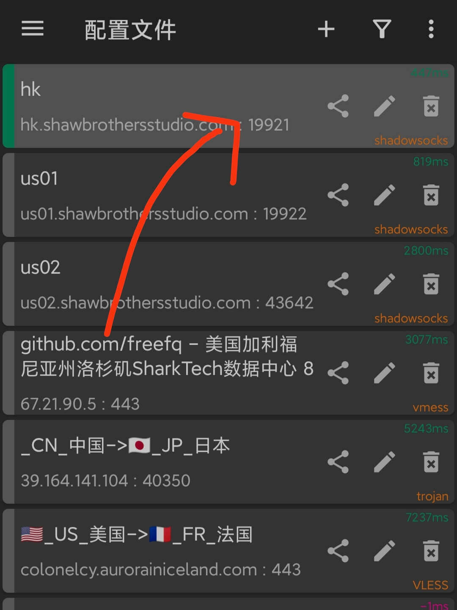
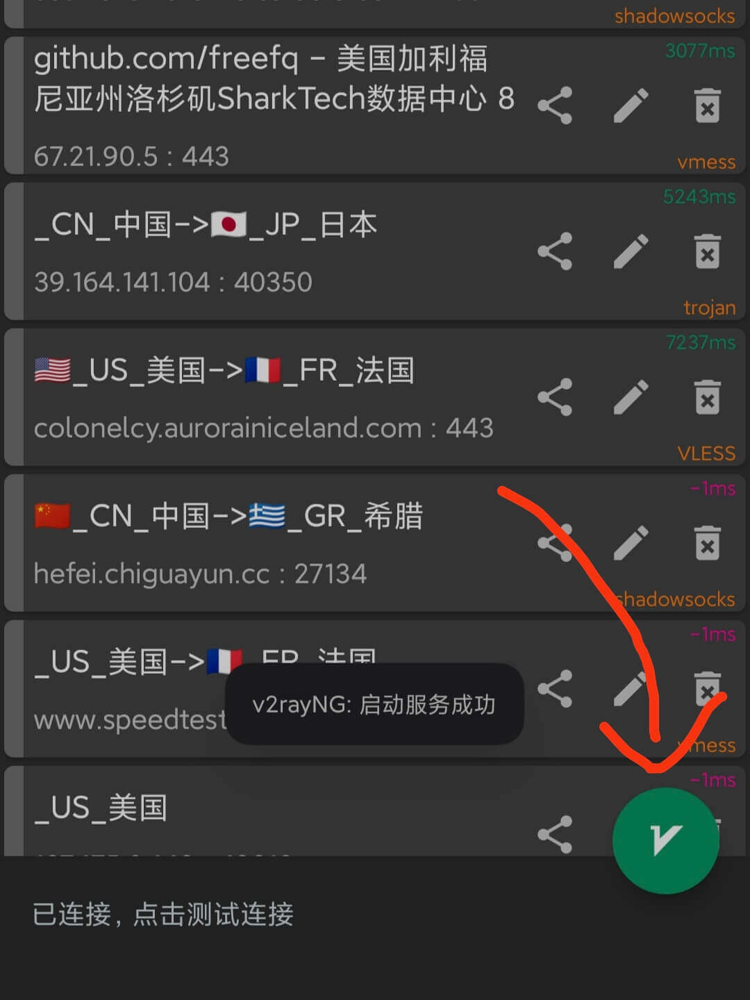
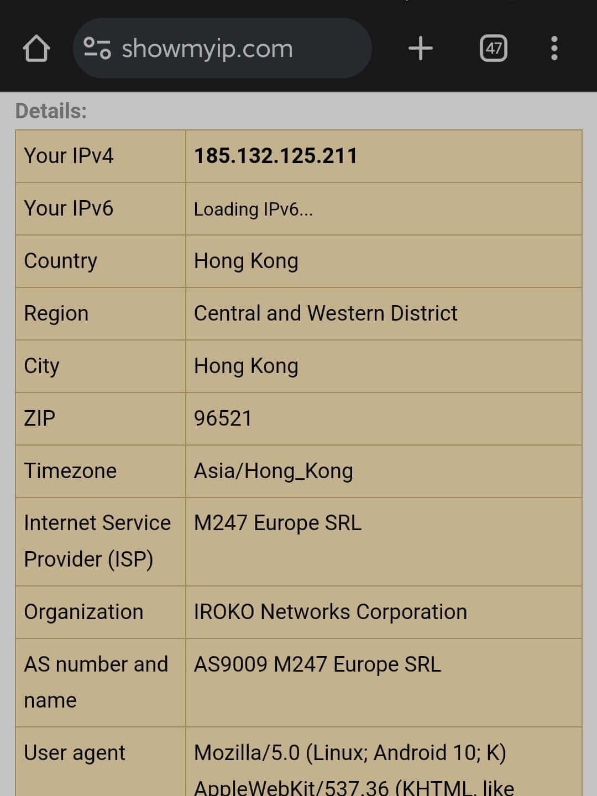
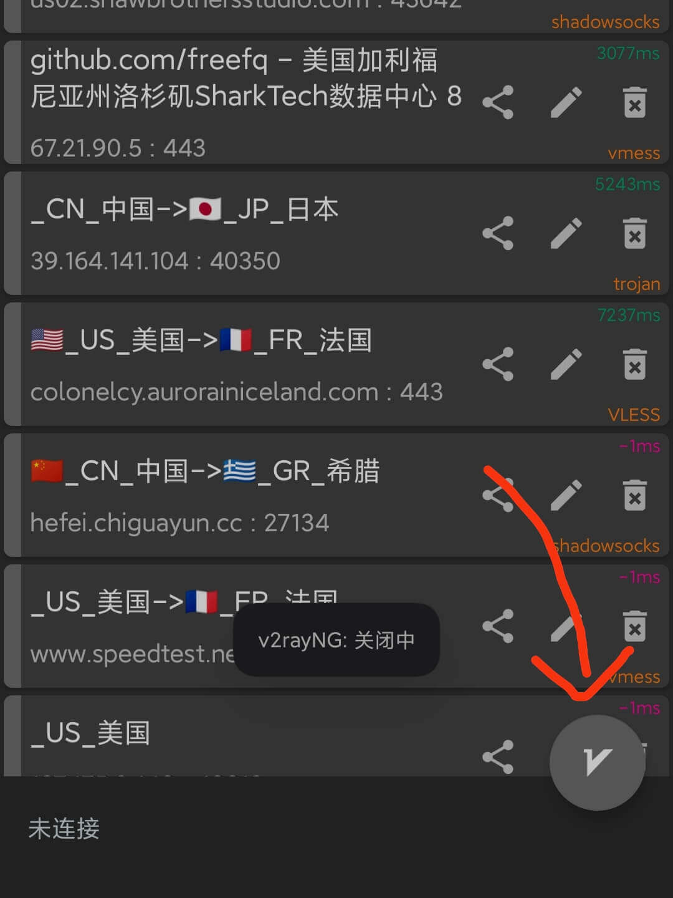
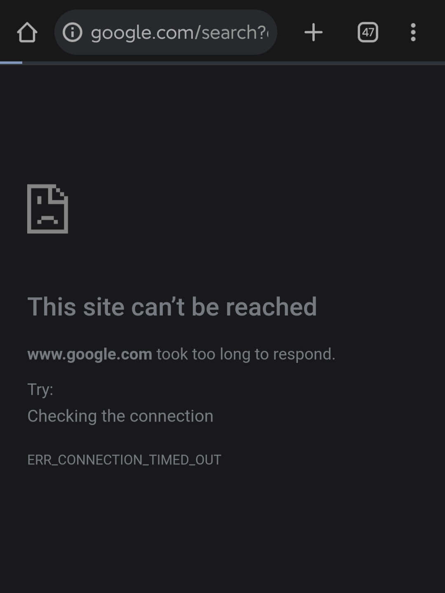

详细介绍Windows端的免费翻墙方式——v2rayNG
0. 确保位于正确环境
- 如果你在微信内部打开了该链接，请点击窗口标题栏的
··· 按钮，再点击 在浏览器打开
以切换至系统默认浏览器。如果你未发现类似标识，请忽略此步。

1. 基本使用
- 你可以使用以下方式来下载软件的安装包： 访问网址：https://www.123pan.com/s/ArpbVv-nu3xh.html，点击 下载文件 ，等待下载完成。（假如链接失效请通知作者） 
- 安装下载的APK，前往此处 复制全部节点配置信息，然后打开桌面上的v2rayNG。 
- 点击v2rayNG上方控制栏 + 按钮，然后选择
从剪贴板导入。（剪贴板未被写入
或 未导入任何服务器？）
 
 - 点击 ⋮ 按钮，选择
测试全部配置真连接 。


- 再次点击 ⋮ 按钮，选择
按测试结果排序 。

- 滚动到页面顶部，点击最上方的一栏。（-1表示暂时无法连接该服务器）（不一定是图示的一栏，以实际情况为准） 
- 点击应用右下方的 V 按钮。（如果弹出类似 “是否运行v2rayNG创建VPN连接” 的对话框，选择允许） 
- 恭喜，现在自由互联网的大门才真正向你敞开！ 
2. 其它设置
2.1 断开连接后如何再次连接
- 你可以直接再次点击应用右下角点击 V 按钮，或者更加规范的做法是：重复 第一部分 步骤4-步骤7。
2.2 如何断开与服务器的连接
- 打开v2rayNG软件，再次点击应用右下方的 V 按钮，如果其变为灰色，则说明已经断开连接。 
2.3 修复 连接后仍然不起作用的问题
- 由于我们使用的都是免费节点，所以难免出现连接不稳定的现象，这时可能需要重新切换VPN服务器：打开v2rayNG，重复 第一部分 步骤4-步骤7 ，来选择最当前最适合的服务器。 
3. 附录
- v2rayN是开源软件，其仓库位于https://github.com/2dust/v2rayNG，目前我所提供的版本是截至2023.10.15的最新 Android 正式版本，你可以参见此处。
- 目前我提供的免费节点都来源于互联网，你也可以通过谷歌搜索获取更多免费节点，但请注意并非每个来源于互联网的节点都免费、安全、可靠。
- 免费的节点可能只在一段时间内可用，如果希望连接更加稳定快速，推荐一个付费的VPN客户端：Express VPN。